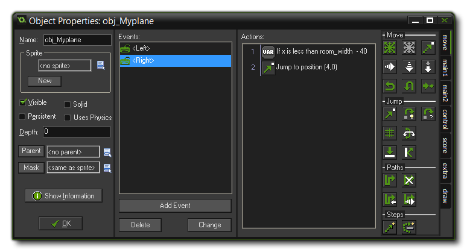

Tutorial
Page 6 of 9
The Player Plane
Now that the scrolling background is ready it is time to make the plane that the player will control. You'll be surprised by just how simple this is going to be!
First of all we need a sprite for the plane, and to give some life to the sprite, our plane will be animated to give the propellers the illusion of rotating. For this we use a sprite consisting of three images that are
exactly the same except for the propellers (this image can be found as myplane_strip3.png in the "Scrolling Shooter Assets" folder):

Note the naming of this file. You can load any PNG image into Gamemaker: Studio, but only those that have a file name that ends with _stripXX will be loaded directly into the programme with
the sub-images (individual parts of the sprite) split for you. this is defined by the _stripXX part, where the XX indicates the number of sub-images contained in the sprite. If your sprite is a simple strip
image, or a grid of images, then you will have to set the offset and size of each sub-image manually.
Name the sprite "spr_MyPlane" and set the X and Y of the Origin to 32. This means that the origin of the sprite is the centre of the plane, so whenever we later set the plane
at a position or test the position, we mean the position of the centre of the plane, not the top-left point, which is normally used as the origin. This is important to make sure that, for example, bullets come from
the centre of the plane, and not from one single side.
Next we add a new object and call it obj_Myplane. As a sprite for this object you should choose the plane sprite we just added, and you should give it a depth of –100 to make sure that it lies above
the bullets, islands, etc... that we will have in our game (dealing with the depth property in an effective way is very important for many games, so you should experiment to make sure you understand how it
works).
To help you understand the D'n'D actions that we are going to use, let's just take a moment to think about what we want our player plane to actually do... When the player does nothing, we don't want the plane
to move (remember, the background moves, not the plane!). If the player presses one of the four arrow keys the plane should move in the appropriate direction. Our main concern is to avoid the plane moving
outside the room, and to resolve this, will control the position of the plane directly, rather than give it a speed like the islands.
Written like that it may seem a bit complicated, but you'll be pleased to know that GameMaker: Studio makes complex tasks like this very simple, so let's get started and look at the movement for one key
first...
Moving
To start with let's look at the left arrow key. In the Events list of the object "obj_MyPlane" add a new Keyboard Event (the normal one, not the Pressed, nor the Released event)
for the <Left> key. Now, since we don't want the player plane to be able to fly out of the screen the first thing we need to do is check the current "x" (horizontal) position and only if it is greater than
the left edge of the room, permit the plane to move.
Add a "Test Variable" action to this event, and in that we check to see if the "x" position is larger than 40, like this:
With that done, we need to add another action to move the plane if the above check returns true. For this we use the "Jump to Position" action to move relative –4 pixels along the x axis and along
the y. Don't forget to check the box labelled Relative, otherwise you will not be subtracting 4 from the current x position, but rather you will be setting the x position to 4!
For the right arrow we need to do a similar thing, but instead of creating a new event and adding D'nD, we are simply going to duplicate the Left Arrow Event and then tweak the values. For that,
right-click the Left Arrow Event, and select "Duplicate Event", which will bring up the event selector where you need to choose the Right arrow Keyboard Event. This will duplicate
the event and all it's actions.
Now, double-click on the "Test Variable" action and change the check to "if x is less than room_width - 40", then change the "Jump To Position" action to jump relative to an x of +4 and
y of 0.

We need to do the same for the vertical movement too, so duplicate (or add) events for the Up and down arrow keys, change the checks to check the y position along the vertical axis, and then and
set the x values to 0, and the y value to -4 for the up arrow, and 3 for the down arrow. The image below shows the final list of events:
Our plane can fly now! Place one instance of the plane in the room and run the game now... You should get the illusion of flying above the sea and the plane should respond to the key presses.
© Copyright YoYo Games Ltd. 2015 All Rights Reserved